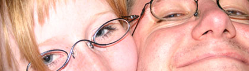
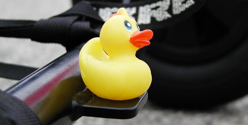
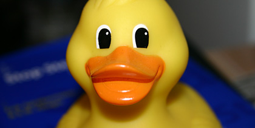

"de wondere wereld van Yellow Duck" is een weblog gemaakt en onderhouden door Pieter Claerhout en Fiona Debergh. Onze weblog is zo'n beetje een online dagboek waarin we zaken beschrijven die we interessant vinden, leuke dingen die we tegenkomen in het dagelijks leven.

Bovenstaande foto toont hoe mijn vriendin en mijzelf er uitzien. Mijn vriendin is de persoon links, ikzelf ben de persoon aan de rechterkant. Zoals je zal zien, de meeste foto's zijn door ons zelf gemaakt, meestal met mijn digitale Japanner, de Panasonic GX-1. Een zeer fijn toestel, al zeg ik het zelf.
Natuurlijk vraagt iedereen zich af van waar dat hele Yellow Duck gedoe komt, nietwaar? Wel, voor mijn 25ste verjaardag wou mijn broer mij een klein cadeautje geven om achteraan op mijn buggy (zo'n vliegerding voor op het strand). Hij wou eerst een Kermit de kikker geven, maar dat bleek helaas niet te vinden te zijn. Als tussentijds cadeau, en om toch niet met lege handen te moeten afkomen, kwam hij met een klein rubber eendje af. Veel kleiner maar even sympathiek als Kermit.

Zoals je kan zien is Yellow Duck heel trots om achteraan op de buggy te mogen vertoeven. Kijk zijn staart eens mooi in de lucht staan, de glimlach op zijn gezicht. Wat kan een gele eend meer willen? Sinds mijn 25ste verjaardag gaat eend altijd mee op avontuur op het strand. Een EK, een wedstrijd, even gaan rijden voor de fun, we zijn altijd met twee.
Het is ook leuk om te zien dat mensen je beginnen te herkennen omwillen van de gele eend op je buggy. Telkens ik op het strand kom heeft wel altijd iemand gezien dat mijn buggy iets extra heeft.

Als je meer wil te weten komen over mij, dan kan je mij altijd een emailtje sturen of even babbelen met me op MSN. MSN kan je doen naar tsjernochill@hotmail.com. Ik kan niet beloven dat ik altijd online ben natuurlijk. 't Schijnt dat ook webmasters een prive leven hebben ;-)